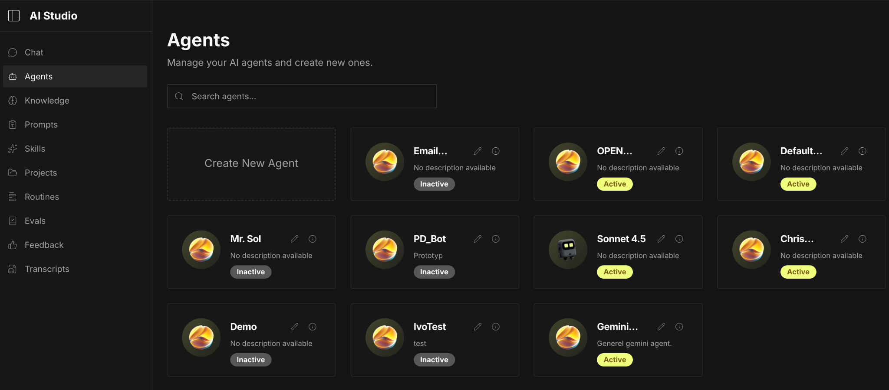
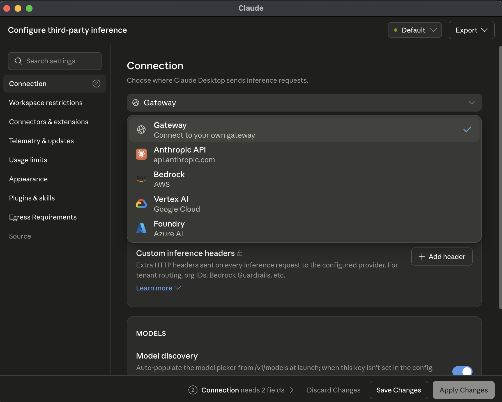
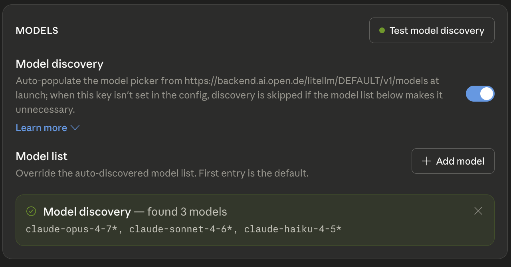
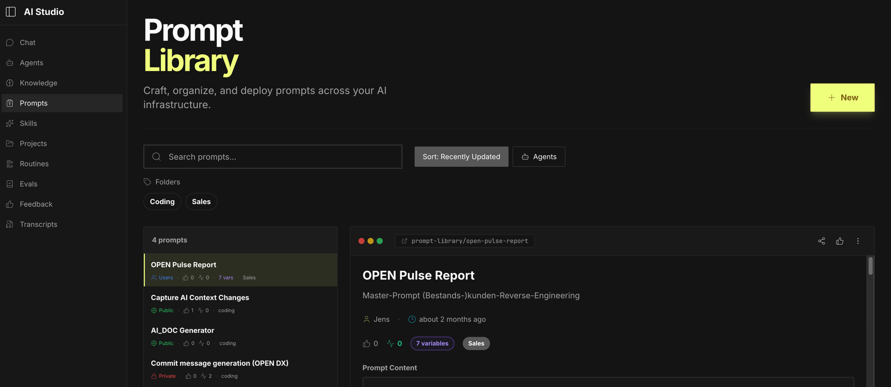
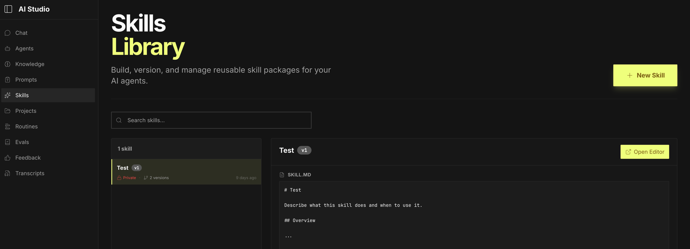
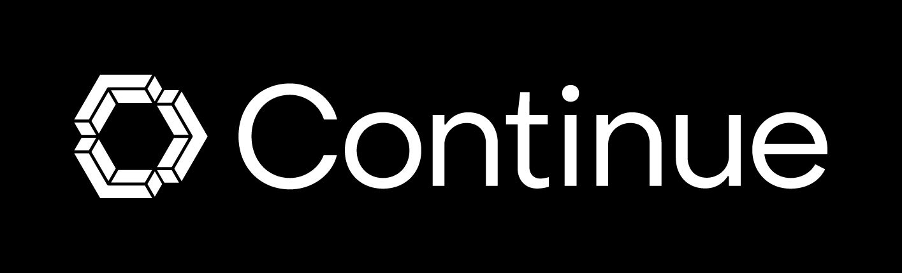
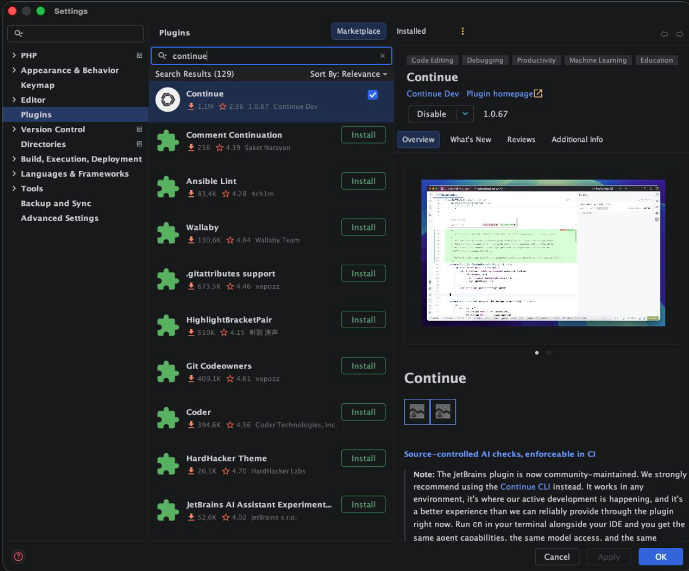
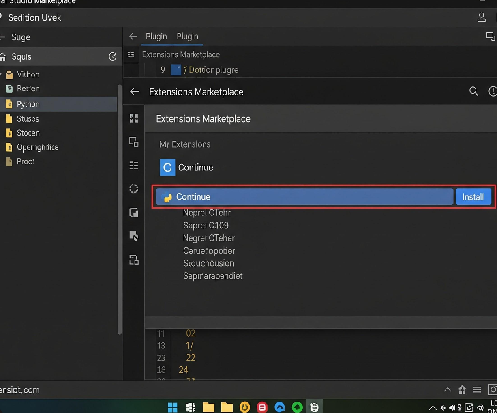
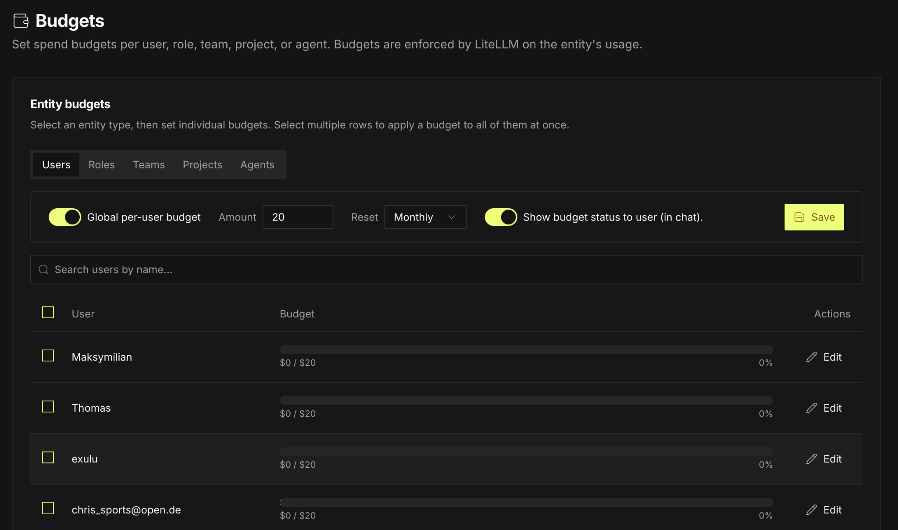

Der vollständige Leitfaden für End User, Developer und Admins — zur zentralen KI-Plattform ai.open.de.
AI.OPEN ist die zentrale, datenschutzkonforme KI-Plattform von OPEN. Sie stellt allen Mitarbeitenden Zugriff auf die aktuellsten State-of-the-Art Sprachmodelle bereit — über ein einheitliches Gateway, das Anfragen automatisch über sichere Umgebungen routet und der korrekten Unit, dem Team, der Rolle und dem Projekt zuordnet.
Damit ist AI.OPEN sowohl für:
… der zentrale Einstiegspunkt für jegliche KI-Nutzung bei OPEN.
Eine schreibgeschützte Übersicht aller verfügbaren Modelle findet sich unter ai.open.de/models. Stand 12.06.2026:
| Modell | Kontext (in / out) | Modalitäten | Kosten (in / out / 1M) | Status |
|---|---|---|---|---|
| vertex-gemini-3.5-flash | 1.0M / 66K | visionpdfaudiotools | $1.50 / $9.00 | ● Active |
| gemini-3.1-flash-lite | 1.0M / 66K | visionpdfaudiotools | $0.25 / $1.50 | ● Active |
| qwen3-235b | 262K / 16K | tools | $0.25 / $1.00 | ● Active |
| vertex-gemini-2.5-pro | 1.0M / 66K | visionpdfaudiotools | $1.25 / $10.00 | ● Active |
| vertex-gemini-2.5-flash | 1.0M / 66K | visionpdftools | $0.30 / $2.50 | ● Active |
| claude-opus-4-7 | 1.0M / 128K | visionpdftools | $5.00 / $25.00 | ● Active |
| claude-sonnet-4-6 | 1.0M / 64K | visionpdftools | $3.00 / $15.00 | ● Active |
| claude-haiku-4-5 | 200K / 8K | visionpdftools | $1.00 / $5.00 | ● Active |
| codestral-2 | TBD | tools | TBD | ● Prüfung |
| mistral-medium-3 | TBD | tools | TBD | ● Prüfung |
Modelle mit Status ● Prüfung werden derzeit vom KI-Team evaluiert und sind noch nicht produktiv freigeschaltet.
Die Liste wird zentral durch das KI-Team gepflegt. Neue Modelle werden nach interner Evaluation freigeschaltet.
AI.OPEN steht als zentrales Gateway zwischen den End-User-Tools (Browser, IDEs, Desktop-Apps) und der eigentlichen Google Cloud Platform (GCP), auf der die Sprachmodelle laufen. Das Gateway übernimmt Authentifizierung, Routing zum richtigen GCP-Projekt, Tagging für die Kostenzuordnung und die Budget-Kontrolle.
Jede Unit hat ihr eigenes GCP-Projekt. Anfragen werden im Gateway dem Projekt der Unit zugeordnet, in der der Benutzer arbeitet — Authentifizierung durchgängig über Google SSO.
| Unit | GCP-Projekt-Owner |
|---|---|
| CX | Elias Dreisbach |
| ADX | Jens Parree |
| SC | Andreas Hucks |
Unter ai.open.de/agents findest du vom KI-Team bereitgestellte Custom Agents. Diese kombinieren Sprachmodelle mit hinterlegten Wissensquellen und Integrationen zu anderen Systemen, um konkrete Use Cases abzubilden — z.B. Angebotsgenerierung, Kundenanalyse oder Call-Transkripte.

| Agent | Use Case | Hauptansprechpartner |
|---|---|---|
| OPEN PULSE | Kundenanalyse | Robert Schaperjahn |
Um den Claude Desktop Client datenschutzkonform und mit Budget-Zuordnung über AI.OPEN zu betreiben, folgende Schritte:
Gateway wählen.Static API Key.https://backend.ai.open.de/litellm/<PROJECT_ID>
<PROJECT_ID> ersetzen mit entweder DEFAULT oder einer
Projekt-ID aus ai.open.de/projects.


Mit Apply Changes bestätigen. Fertig.
AI.OPEN bietet zwei zentrale Bibliotheken, mit denen Prompts und Skills team-übergreifend verwaltet, versioniert und geteilt werden — statt sie in lokalen Notizen oder Chat-Verläufen zu verstecken.
Die Prompt Library erlaubt das Erstellen, Organisieren und Deployen von Prompts über die gesamte KI-Infrastruktur hinweg.

Die Skills Library erlaubt das Bauen, Versionieren und Verwalten von wiederverwendbaren Skill-Paketen für AI Agents.

Skills einmal bauen, in mehreren Agents nutzen — ohne Copy-Paste oder Drift zwischen Implementierungen. Updates eines Skills landen automatisch bei allen Konsumenten in der nächsten Version.
| Du willst… | … nutze |
|---|---|
| Einen häufig wiederkehrenden Text-Baustein zentral pflegen | Prompts Library |
| Eine fachliche Vorlage für mehrere Kollegen teilen | Prompts Library |
| Einen wiederverwendbaren Skill für mehrere Agents zur Verfügung stellen | Skills Library |
| Einen kompletten Use Case (Modell + Wissen + Skills) als Anwendung bauen | Custom Agents |
Die meisten Coding-Tools sprechen die OpenAI-API. AI.OPEN stellt dafür einen kompatiblen Endpunkt bereit:
https://backend.ai.open.de/litellm/<PROJECT_ID>/v1/
<PROJECT_ID> ersetzen mit DEFAULT oder einer
Projekt-ID aus ai.open.de/projects.
| Methode | Erstellen | Header | Einsatz |
|---|---|---|---|
| Persönliches Token user-bezogen |
ai.open.de/token | Authorization: Bearer <token> |
Default für IDE-Integrationen |
| API Key anwendungsbezogen |
ai.open.de/keys | exulu-api-key: <key> |
Für Services / Anwendungen |
Lege folgende settings.json im .claude Ordner an
(typischerweise im Repository-Root):
{ "model": "claude-opus-4-7", "availableModels": [ "claude-sonnet-4-6", "claude-haiku-4-5", "claude-opus-4-7" ], "env": { "ANTHROPIC_BASE_URL": "https://backend.ai.open.de/litellm/<PROJECT_ID>", "CLAUDE_CODE_DISABLE_EXPERIMENTAL_BETAS": 1, "DISABLE_AUTOUPDATER": 0 }, "apiKeyHelper": "echo <MY_TOKEN>" }
<PROJECT_ID> und <MY_TOKEN> entsprechend ersetzen.
Bei availableModels können prinzipiell alle Modelle aus AI.OPEN gelistet werden.

Cmd+, / Ctrl+Alt+S)Cmd+Shift+X)

Continue-Icon → Zahnrad-Icon (Settings) → Configs →
hinter Local Config auf das Zahnrad-Icon. Dann folgenden Eintrag in
config.yaml einfügen:
name: Local Config version: 1.0.0 schema: v1 models: - name: AI.OPEN provider: openai apiBase: https://backend.ai.open.de/litellm/<PROJECT_ID>/v1 apiKey: <TOKEN> model: AUTODETECT roles: - chat - edit - apply capabilities: - tool_use - image_input
Projekt/Agent, dadurch wird der
Token-Verbrauch sauber auf die jeweiligen Projekte gebucht.
Admins und Team-Leads können unter ai.open.de/budgets individuell pro Benutzer die Budgets erhöhen. Budgets sind setzbar pro User, Role, Team, Project oder Agent — durchgesetzt werden sie durch LiteLLM auf Basis der jeweiligen Entity-Nutzung.
| Aktion | Zuständig |
|---|---|
| Budget-Anpassung innerhalb des Teams (bis $3.500/Monat) | KI-Lead der Unit |
| Budget-Erhöhung über das OPEN-weite Maximum ($3.500/Monat) | KI-Team |

Super-Admins haben Zugriff auf das Controlling-Backend unter backend.ai.open.de/litellm-admin/ui/. Pro Projekt, Benutzer, Rolle und Team können Daten für die Kostenzuordnung exportiert werden.
AI.OPEN ist die strategische Plattform für sämtliche KI-Nutzung bei OPEN. Das KI-Team pflegt eine Roadmap an Custom Agents, die schrittweise verfügbar gemacht werden.
Erste Anlaufstelle innerhalb deiner Unit für alles rund um AI.OPEN — insbesondere für Budget-Anpassungen innerhalb des Teams.
| Unit | KI-Lead |
|---|---|
| ADX | patrick.dyckerhoff@open.de |
| CX | sergej.keterling@open.de |
| SC | andreas.hucks@open.de |
| ST | alexander.stevenson@open.de & nils.heine@open.de |
| Anliegen | Ansprechpartner |
|---|---|
| Allgemeine AI.OPEN Fragen, neue Agent-Ideen, Mitentwicklung | Daniel Claessen, Michael Möckel |
| OPEN PULSE (Kundenanalyse-Agent) | Robert Schaperjahn |
| Budget-Erhöhung innerhalb eines Teams | KI-Lead der jeweiligen Unit (siehe oben) |
| Budget-Erhöhung über OPEN-weites Maximum ($3.500) | KI-Team |
| GCP-Projekt CX | Elias Dreisbach |
| GCP-Projekt ADX | Jens Parree |
| GCP-Projekt SC | Andreas Hucks |
| Controlling-Exports & Reporting | Super-Admins / KI-Team |